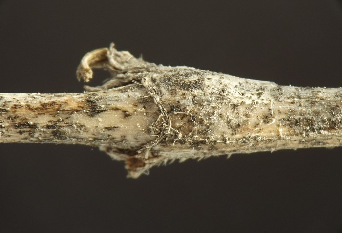
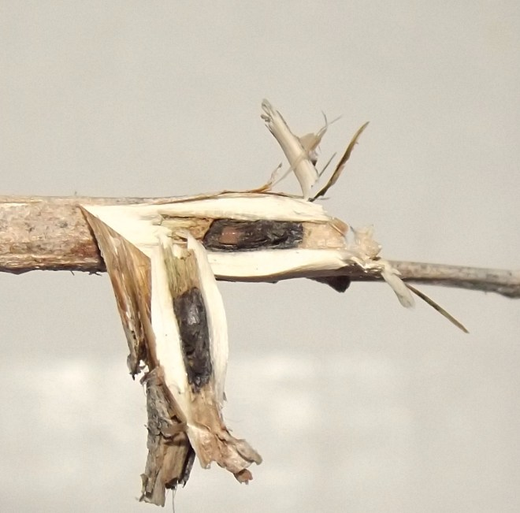
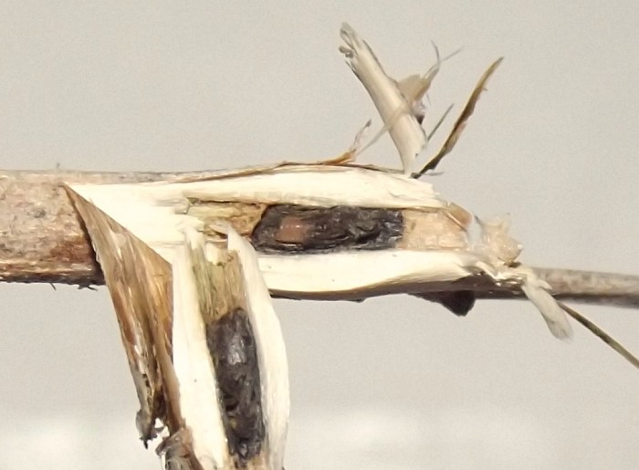
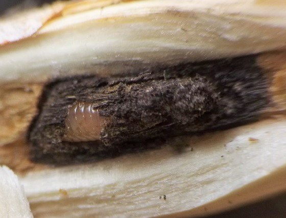
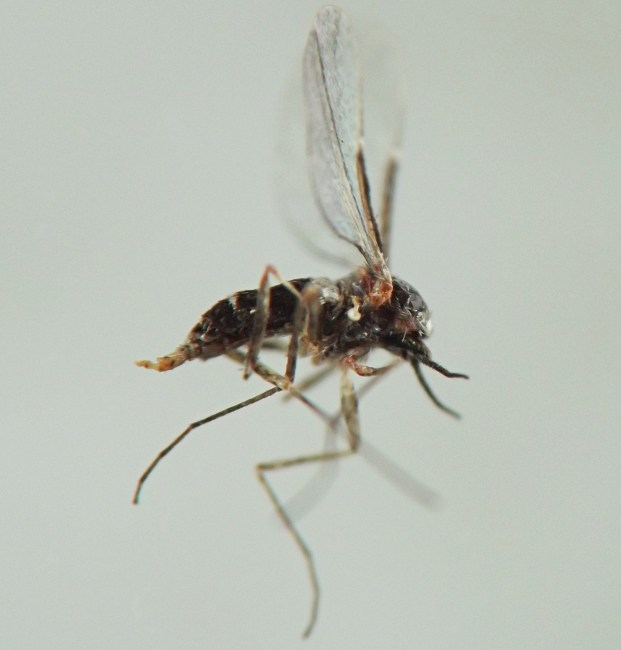
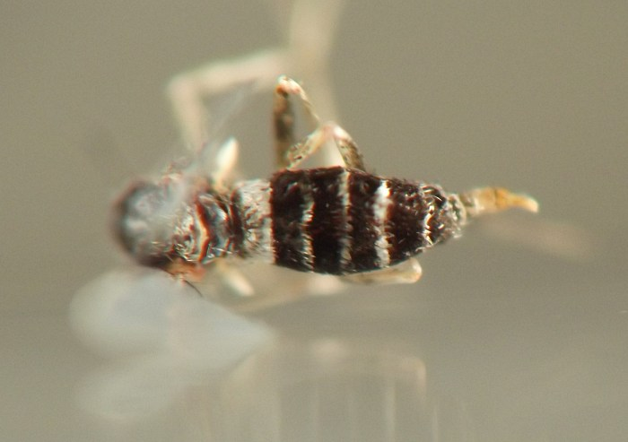

Local feeder (Diptera: Cecidomyiidae) in stems of Verbena
| Record no.: | 0596 |
|---|---|
| Feeding guild: | Local feeder in stem |
| Taxonomy: | Diptera: Cecidomyiidae: Neolasioptera sp. |
| Stages observed: | trace, larva, pupa, adult |
| Distribution observed: | IA |
| Hosts in Verbena: | V. urticifolia (white vervain) |
The stem may swell very little or not at all at the location where a larva dwells within, or in some stems there may be a noticeable swelling. In the interior of the stem, the pith surrounding the larva turns black, apparently as a result of the presence of a symbiotic fungus. I reared an adult in summer 2023. R.J. Gagné examined an individual collected in 2017 and determined that it belonged to the genus Neolasioptera (pers. comm.).

 Prev
Prev
{kind=link}
{kind=link}

{kind=link}

{kind=link}

{kind=link}

{kind=link}

Coll. 04/23/23, photo taken same day (03); coll. 03/04/17, photos same day (02, 04-05); coll. 05/28/23, adult em. by 06/19/23, photos of adult on 06/20/23 (06-07). All specimens above from Iowa, USA.
Page created: March 10, 2026. Last update: none